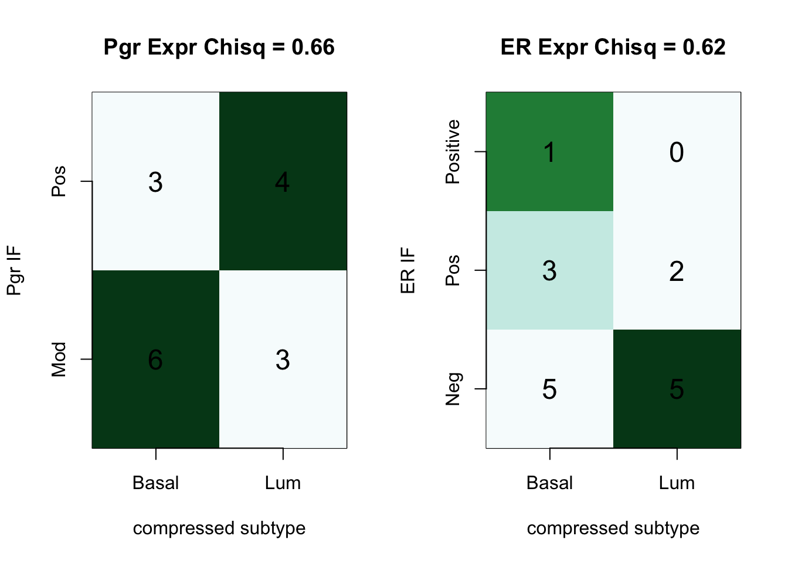

Chapter 5 Expression data
This file looks at loading and pre-processing data for:
- differential gene expression analysis
- PAM50 subtyping
- uploading into CIBERSORT/TIMER
5.1 Running alignment
Samples were mapped in star using the following parameters. Note that the first two batches of samples run had shorter read lengths (~75 bp) whereas batch 3 had lengths of ~150bp
## Not run here
STAR \
--readFilesCommand zcat \
--genomeDir /n/scratch2/at268/rn6_v2 \
--sjdbGTFfile /n/scratch2/at268/rn6_v2/rn6.refGene.gtf \
--runThreadN 10 \
--runMode alignReads \
--genomeLoad NoSharedMemory\
--outSAMattributes NH HI AS nM NM\
--outSAMstrandField intronMotif\
--outFilterMultimapNmax 20\
--alignSJoverhangMin 8\
--readFilesIn $1 $2 \
--alignSJDBoverhangMin 1\
--outFilterMismatchNmax 999\
--outFilterMismatchNoverLmax 0.1\
--alignIntronMin 20\
--alignIntronMax 1000000\
--alignMatesGapMax 1000000\
--outFilterType BySJout\
--outFilterScoreMinOverLread 0.33 \
--outFilterMatchNminOverLread 0.33 \
--limitSjdbInsertNsj 1200000 \
--outFilterIntronMotifs None \
--alignSoftClipAtReferenceEnds Yes\
--outSAMattrRGline ID:$4 SM:$4 \
--chimSegmentMin 15 \
--chimJunctionOverhangMin 15\
--limitBAMsortRAM 0\
--outSAMtype BAM SortedByCoordinate\
--outSAMunmapped Within \
--quantMode GeneCounts transcriptomeSAM \
--quantTranscriptomeBan IndelSoftclipSingleend \
--outFileNamePrefix $3 \
--twopassMode BasicIn addition, RSEM was run to obtain TPM, rsem and FPKM counts. Note: rn6.refGene.gtf.gz was used to generate the RSEM library!(This is the may version)
5.2 RNA Initial QC
Default output from R showing the number of unique reads compared to multimapped, unmapped etc. This is shown for each batch. Note that batch 3 has differences (high percentage of unmapped) compared to the other batches, possibly due to DNA contamination.
Below we check for three measures:
- mapped million reads (ideally, 10M+ reads)
- Gene Sparsity: This is a measurement of the number of genes which have non-zero values. Ideally, would be greater than 10K, but values which are too high may also suggest contamination from DNA (unexpressed genes are also counted)
- Varability: standard deviation of the transcriptomic counts. If this value is too low, would suggest that high DNA contamination, non-representative transcriptome.


Samples to remove from analysis:
The thresholds indicated below are based on the above density plots, and removes cases which are <1.5 SD of the mean
- low total number of mapped reads (under 1.5M)
- sparsity: less than 8K genes
- variability : threshold under 500
The omitted samples are:
| MappedReadsM | GeneSparsityK | Batch | GeneVariabilityCounts | Type | names | |
|---|---|---|---|---|---|---|
| 6R_C_CD45 | 2.287110 | 5.585 | 2 | 1063.38925 | CD45 | 6R_C_CD45 |
| 10L_B_DN | 0.864838 | 3.308 | 2 | 559.30659 | DN | 10L_B_DN |
| NMU1_LL_Ep | 1.032440 | 16.708 | 3 | 69.82645 | Ep | NMU1_LL_Ep |
| NMU5_LA_Ep | 0.500429 | 15.707 | 3 | 35.56084 | Ep | NMU5_LA_Ep |
| Control1__Ep | 8.224593 | 5.800 | 1 | 3164.00515 | Ep | Control1__Ep |
| NMU13_RAU_Ep | 3.049733 | 7.242 | 1 | 1069.99912 | Ep | NMU13_RAU_Ep |
We are left with 110 samples.
There are 47, 32, 31 samples in the CD45, Ep, DN fractions.
There are 20, 49, 41 samples from batches 1, 2 and 3 respectively.
5.3 Normalisation
Run through DESEq and normalise the library. Using all samples, we run the model:
expression ~ Celltype + factor (Batch)
and keep the genes which have a total count of at least half the number of samples. ie. $ sum(gene_i) > N_{samples}/2 $
5.3.1 preliminary visualisation (to remove outliers)
Below are PCA plots based on:
- Batch
- CellType


Batches in general separate out well, however, some samples appear to be outliers in comparison to the main group. We look in closer detail the CD45, DN and EpCAM populations.
In the CD45 population, narrow down to only immune related genes to see if there is a difference.


Based on the above plots, we remove the following outliers and re-run the normalisation:
- 2R_D_DN
- 4L_B_CD45
5.4 Processing files for external software
We also process these files for external software:
| Software | RNA-data |
|---|---|
| PAM50 | rsem data after quantile normalised, genes converted to human |
| TIMER | TPM values, retain rat ids |
| xcell | rsem data, genes converted ti human |
| cibersort | tpm?? convert to rat genes and use lm22 rat |
## named integer(0)## named integer(0)Save the mouse names for TIMER cistrome: check that this is actually required for TIMER